조경기사 (2017-09-23 기출문제)
1과목: 조경사
1. 우리나라에 모란(牡丹) 씨가 도입된 시기는?
- 신라 진평왕 49년
- 백제 동명성왕 22년
- 신라 법흥왕 21년
- 신라 문무왕 14년
(정답률: 65%)

2. 중국에 조성된 정원과 이를 경영한 인물의 연결이 틀린 것은?
- 이덕유 - 평천산장
- 왕유 - 망천별업
- 사마광 - 독락원
- 이격비 - 졸정원
(정답률: 75%)
3. “추고천황(推古天皇) 20년(612년)에 백제의 노자공(路??)이 수미산(須彌?)과 오교(吳橋)를 만들어 놓았다.” 라는 내용이 포함된 일본 최초정원에 관한 기록서는?
- 작정기(作庭記)
- 일본서기(日本書紀)
- 축산정조전 전편(築山庭造傳 前篇)
- 석조원생팔중탄전(石粗園生八重坦傳)
(정답률: 72%)
4. 20세기 초 도시미화운동의 이론적 배경을 마련한 미국의 조경가는?
- 맥킴(C. McKim)
- 번햄(D. Burnham)
- 로빈슨(C. Robinson)
- 생고덴(A. Saint-Gaudens)
(정답률: 59%)
5. 영국 풍경식 조경가들의 활동연대 순서가 오래된 것부터 순서대로 바르게 배열된 것은?
- 찰스 브릿지맨 → 란셀로트 브라운 → 월리암 켄트 → 험프리 랩턴
- 월리암 켄트 → 란셀로트 브라운 → 찰스 브릿지맨 → 험프리 랩턴
- 월리암 켄트 → 찰스 브릿지맨 → 란셀로트 브라운 → 험프리 랩턴
- 찰스 브릿지맨 → 월리암 켄트 → 란셀로트 브라운 → 험프리 랩턴
(정답률: 66%)
6. 다음 중 관련 연결이 적절하지 않은 것은?
- 장물지(長物誌) - 계성
- 애련설(愛蓮設) - 주돈이
- 낙양명원기(洛陽名園記) - 이격비
- 유금릉제원기(遊金陵諸園記) - 왕세정
(정답률: 81%)
7. 한국정원의 특징으로 가장 거리가 먼 것은?
- 풍류생활의 장
- 유불선 사상 반영
- 원지의 단조로움
- 곡선위주의 윤곽선 처리
(정답률: 71%)
8. George Washington이 개조했으며 가장 사랑했던 주택은?
- 몬티셀로(Monticello)
- 군스톤 홀(Gunston Hall)
- 마운트 버논(Mount Vernon)
- 스토우 하우스(Stowe House)
(정답률: 62%)
9. 17세기 영국 스튜어트 왕조의 정원에 미친 네덜란드의 영향이 아닌 것은?
- 튤립의 식재
- 방사형의 소로
- 공간구성의 조밀함
- 상록수를 환상적 형태로 다듬은 토피아리
(정답률: 59%)
10. 다음 서원과 대(臺)의 연결이 틀린 것은?
- 도산서원 - 천연대
- 옥산서원 - 사산오대
- 돈암서원 - 영귀대
- 무성서원 - 유상대
(정답률: 54%)
11. 백제시대의 궁원을 조성 시기 순으로 바르게 나열한 것은?
- 궁남지 → 한산성궁원 → 망해정 → 임류각
- 한산성궁원 → 임류각 → 궁남지 → 망해정
- 임류각 → 한산성궁원 → 궁남지 → 망해정
- 한산성궁원 → 궁남지 → 임류각 → 망해정
(정답률: 58%)
12. 건륭화원(乾隆花園)의 설명으로 맞는 것은?
- 3개의 단으로 이루어진 전통적 계단식 경원이다.
- 제1단은 석가산을 이용하여 자연의 웅장함을 갖게 하였다.
- 제2단은 인공 연못을 조성하여 심산유곡을 상징화 하였다.
- 제3단은 석가산위에 팔각문이 달린 죽향관을 세웠다.
(정답률: 57%)
13. 한족은 산, 삼방은 못으로 조성되어 연꽃 향으로 유명한 하풍사면정(荷風四面亭)과 관련된 정원은?
- 졸정원
- 상림원
- 이화원
- 사자림
(정답률: 54%)
14. 도시 조절 기능으로 그린벨트(녹지대) 개념이 생겨난 것은?
- 보스톤 공원계통
- 랑팡의 워싱턴 계획
- 하워드의 전원도시론
- 옴스테드의 센트럴파크 계획
(정답률: 71%)
15. 테베(THEBE)에서 발견된 아래의 고대 이집트 벽화와 직접 관련되는 정원은?
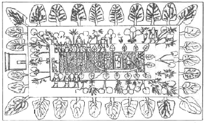
- 궁궐정원
- 묘지정원
- 옥상정원
- 주택정원
(정답률: 80%)
16. 우리나라 경복궁의 향원정(香遠亭)이라는 명칭은 어느 사람의 글에서 따온 것인가?
- 왕희지
- 주돈이
- 도연명
- 황정견
(정답률: 67%)
17. 일본 강호(江戶, 에도) 시대의 정원이 아닌 것은?
- 계리궁(桂離宮)
- 천룡사(天龍寺) 정원
- 수학원이궁(修學院離宮)
- 소석천후락원(小石川後樂園)
(정답률: 52%)
18. 바로크 양식의 특징으로 가장 거리가 먼 것은?
- 직선적인 것을 선호
- 토피아리의 난용(亂用)
- 물에 대한 기교적인 취급
- 개성적 형태와 평면의 격렬한 대비
(정답률: 68%)
19. 일본에서 용안사(龍安寺), 대덕사(大德寺)의 대선원(大仙院)과 같은 고산수(枯山水)가 나타났던 시대는?
- 평안(平安)시대
- 겸창(鎌倉)시대
- 실정(室町)시대
- 도산(桃山))시대
(정답률: 55%)
20. 다음 중 화계(花階)를 인공적으로 성토하여 조성한 사례는?
- 다산초당의 화계
- 연경당의 선향재 후원
- 낙선재와 석복헌의 후원
- 경복궁 교태전 후원의 아미산원
(정답률: 82%)
2과목: 조경계획
21. 주택의 배치 시 쿨데삭(Cul-de-sac) 도로에 의해 나타나는 특징이 아닌 것은?
- 주택이 마당과 같은 공간을 둘러싸는 형태로 배치된다.
- 주민들 간의 사회적인 친밀성을 높일 수 있다.
- 통과교통이 출입하지 않으므로 안전하고 조용한 분위기를 만들 수 있다.
- 보행 동선의 확보가 어렵고, 연속된 녹지를 확보하기 어려운 단점이 있다.
(정답률: 79%)
22. 도로관리청은 도로 구조의 파손 방지, 미관의 훼손 또는 교통에 대한 위험 방지를 위하여 필요하면 소관 도로의 경계선에서 20미터를 초과하지 아니하는 범위에서 대통령령으로 정하는 바에 따라 어떤 구역을 지정할 수 있는가?
- 입체적도로구역
- 도로보전입체구역
- 접도구역
- 노견
(정답률: 59%)
23. 일반주거지역 등에 설치하는 문화 및 집회시설 건축물의 공개공지를 확보해야 할 때의 건축물 바닥면적 합계 조건과 공개공지 설치면적의 범위 기준이 모두 맞는 것은?
- 4,000m2 이상, 대지면적의 5%이하
- 4,000m2 이상, 대지면적의 10%이하
- 5,000m2 이상, 대지면적의 15%이하
- 5,000m2 이상, 대지면적의 10%이하
(정답률: 61%)
24. 학교조경 계획 시 고려사항으로 가장 거리가 먼 것은?
- 일조는 겨울철 기준으로 적어도 4시간 이상 얻을 수 있도록 한다.
- 학생들의 이해를 돕기 위해 식생관련 안내 표찰 설치를 검토한다.
- 교목위주의 수목식재를 설계하고 기존의 성상이 양호한 대형 수목은 존치시킨다.
- 시설물 설치는 최대한 다양하게 설치한다.
(정답률: 72%)
25. 조경계획 및 설계를 위한 과정 중 필수적으로 수집 ·분석할 자료의 범주로 가장 거리가 먼 것은?
- 물리/생태적 자료
- 사회/형태적 자료
- 시각/미학적 자료
- 산업/경계적 자료
(정답률: 75%)
26. 자연공원법 상 국립공원으로 지정하기 위해 필요한 서류에 해당하지 않는 것은?
- 지역 주민의 지정 동의서
- 공원지정의 목적 및 필요성
- 인구, 주거, 문화재 등 인문현황
- 동 · 식물의 분포, 지형 · 지질, 수리 · 수문, 자연경관, 자연자원 등 자연환경현황
(정답률: 72%)
27. 레크레이션 수요 중에서 사람들로 하여금 패턴을 변경하도록 고무시키는 수요는?
- 잠재수요
- 유도수요
- 유사수요
- 표출수요
(정답률: 77%)
28. 다음 중 경관분석의 기법에 해당하지 않는 것은?
- 기호화 방법
- 군락측도 방법
- 사진에 의한 방법
- 메쉬(mesh)에 의한 방법
(정답률: 61%)
29. 뉴먼(Newman)은 주거단지 계획에서 환경심리학적 연구를 응용하여 범죄 발생률을 줄이고자 하였다. 뉴먼이 적용한 가장 중요한 개념은?
- 혼잡성(crowding)
- 프라이버시(privacy)
- 영역성(territoriality)
- 개인적 공간(personal space)
(정답률: 75%)
30. 뉴어바니즘(New Urbanism)의 계획이념과 가장 거리가 먼 것은?
- 도로가 서로 연결된 계획
- 보행자를 최대한 고려한 계획
- 동일한 주거형태를 이용하여 지역의 명료성을 강조하는 계획
- 모든 요소를 종합하여 단지의 조화와 유지를 위해 강력한 디자인 코드를 사용하는 계획
(정답률: 64%)
31. 유원지에서 위락활동의 수요에 직접적으로 영향을 주는 요소로 가장 거리가 먼 것은?
- 토지가격
- 교육정도
- 지리적인 위치
- 이용자의 수입
(정답률: 71%)
32. 조경계획에서 식생현황 조사의 기본 목적으로 가장 거리가 먼 것은?
- 공사에 필요한 수목재료의 이용
- 보존지역의 파악
- 개발 가능지역의 한정
- 바람의 이동경로 예측
(정답률: 60%)
33. 다음 중 환경영향평가 대상사업의 종류 및 범위 기준으로 틀린 것은?
- 「도로법」 및 「국토의 계획 및 이용에 관한 법률」에 따른 도로의 건설사업 중 왕복 2차로 이상인 기존 도로로서 길이 10킬로미터 이상의 확장
- 「관광진흥법」에 따른 관광사업 중 사업면적이 30만제곱미터 이상인 것
- 「자연공원법」에 따른 공원사업 중 사업면적이 10만제곱미터 이상인 것
- 「체육시설의 설치·이용에 관한 법률」에 따른 체육시설의 설치공사 중 사업면적이 10만제곱미터 이상인 것
(정답률: 49%)
34. 근린주구는 공간상의 한계와 사회적 네트워크 (social network), 지역시설에 대한 집중적인 이용과 주민들간의 감성적(感性的)·상징적(象徵的)인 의미를 지닌 작은 지역이라고 주장한 사람은?
- C.S.Stein
- Ruth Glass
- G. Golany
- Suzzane Keller
(정답률: 56%)
35. 생태복원 관련 용어 중 “완벽한 복원은 아니지만 원래의 자연 상태와 유사한 것을 목적으로 하는 것” 은 무엇인가?
- 복구(rehabilitation)
- 개조(remediation)
- 재생(nature restoration)
- 향상(enhancement)
(정답률: 80%)
36. 생태계획에서 고려하는 원리로 가장 부적합한 것은?
- 생태계의 폐쇄성
- 생태계 구성요소들 사이의 연결성
- 생태적 다양성과 추이대(ecotone)
- 에너지 투입과 물질저장의 제한성
(정답률: 67%)
37. 다음 중 공동주택을 건설하는 주택단지의 규모에 다른 진입도로 폭(기간도로와 접하는 폭)에 대한 기준으로 틀린 것은?
- 300세대 미만 : 4m 이상
- 300세대 이상 500세대 미만 : 8m 이상
- 500세대 이상 1,000세대 미만 : 12m 이상
- 1,000세대 이상 2,000세대 미만 : 15m 이상
(정답률: 51%)
38. 생태적 결정론(ecological determinism)을 주장하여 조경 계획 및 설계에 있어 생태적 계획의 이론적 기초가 되도록 한 사람은?
- Ian McHarg
- J.O.Simonds
- Lawrece Halprin
- Robert Sommer
(정답률: 77%)
39. 지구단위계획구역 및 지구단위계획을 결정하는 계획은?
- 기본경관계획
- 광역도시계획
- 도시·군기본계획
- 도시·군관리계획
(정답률: 51%)
40. 「도시 및 주거환경정비법」에서 정비사업으로 포함되지 않는 것은?(관련 규정 개정전 문제로 여기서는 기존 정답인 4번을 누르면 정답 처리됩니다. 자세한 내용은 해설을 참고하세요.)
- 주택재개발사업
- 주택재건축사업
- 도시환경정비사업
- 공공시설정비사업
(정답률: 74%)
3과목: 조경설계
41. 자연의 형태에서 찾아볼 수 있는 피보나치수열(Fibonacci Sequence)에 대한 설명으로 틀린 것은?
- 레오나르도 피보나치가 1200년경 발견하였다.
- 원형울타리의 길이를 계산하는데 사용될 수 있다.
- 수학적으로 각 수는 그것을 앞서는 2개의 수의 합인 연속의 수를 말한다.
- 식물의 잎차례나 해바라기 씨에 의해 만들어지는 나선형에서 찾아볼 수 있다.
(정답률: 62%)
42. 산림속의 빨간 벽돌집은 선명하고 아름답게 보인다. 이는 무슨 대비인가?
- 색상대비
- 명도대비
- 채도대비
- 보색대비
(정답률: 65%)
43. 조경설계에 사용되는 “삼각스케일”에 표기되어 있는 축척이 아닌 것은?
- 1/800
- 1/600
- 1/300
- 1/100
(정답률: 77%)
44. 그림의 치수 표시 방법으로 틀린 것은?
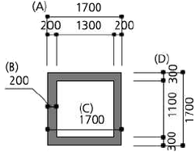
- (A)
- (B)
- (C)
- (D)
(정답률: 65%)
45. 수경시설(폭포, 벽천, 실개울 등) 설계고려 사항 중 틀린 것은?
- 실개울의 평균 물깊이는 3 ~ 4cm 정도로 한다.
- 분수는 바람에 의한 흩어짐을 고려하여 주변에 분출높이의 2배 이하의 공간을 확보한다.
- 콘크리트 등의 인공적인 못의 경우에는 바닥에 배수시설을 설계하고, 수위조절을 위한 월류(over flow)를 반영한다.
- 실개울은 설계대상 공간의 어귀나 중심광장 · 주요 조형요소 · 결절점의 시각적 초점 등으로 경관효과가 큰 곳에 배치한다.
(정답률: 64%)
46. 생태숲의 학습 및 관찰시설 설계요령으로 틀린 것은?
- 야생조류에서 관찰지까지의 거리는 20미터 정도면 탐방객의 관찰을 적극적으로 실시할 수 있다.
- 관찰로를 단일코스로 하는 경우에는 루프형태로 하며 1.5 ~ 5km의 길이로 설치한다.
- 적정노폭은 1.2m로 하되 최소 60cm(주변수목의 최소 개척폭 1.2m, 개척높이 2.1m)를 확보한다.
- 노선의 기울기가 30% 미만일 경우는 비포장으로 하며, 그 이상의 경사로는 통나무 등을 이용한 자연스런 계단식 보도를 설치한다.
(정답률: 55%)
47. 묘지공원을 설계하고자 할 때 고려해야 할 사항으로 틀린 것은?
- 화장장 시설을 부지 내 의무 겸비한다.
- 공원시설 부지면적은 전체 부지의 20% 이상으로 한다.
- 묘역의 면적비율은 공원종류, 토지이용상황, 운영관리의 편의 및 기타 여건에 의해 결정하되 전면적의 1/3 이하로 한다.
- 공원면적의 30 ~ 50% 정도를 환경보존녹지로 확보하고, 식재는 목적과 기능에 적합하고 생태적 조건에 맞는 수종을 선정한다.
(정답률: 55%)
48. 다음 균형(均衡) 중 불균등성(不均等性)에 해당하는 것은?
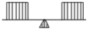
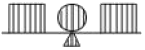
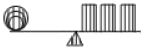
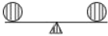
(정답률: 77%)
49. 조경분석에 있어서 생태학적인 요인을 중요시하여 이를 주어진 조건 분석에 overlay 기법을 사용함으로써 적정한 토지이용을 구상하는 방법을 주창하는 사람은?
- F.L.Olmsted
- I.McHarg
- D.Burnham
- V.Olgay
(정답률: 75%)
50. 도시 이미지를 분석해 보면 관찰자에게 두 가지 단계의 경계나 연속적인 요소를 직선적으로 분리하는 요소가 눈에 뜨이게 된다. 이에는 해안, 철로변, 벽 등이 포함될 수 있겠는데 이러한 요소를 케빈린치는 무엇이라 부르고 있는가?
- 모서리(Edges)
- 통로(Paths)
- 지역(Districts)
- 결절점(Nodes)
(정답률: 55%)
51. 시각적 흡수력을 가장 올바르게 설명한 것은?
- 경관의 규모에 비례하여 증가한다.
- 경관의 명암과 농담에 의하여 결정된다.
- 경관의 시각적 매력도와 같은 개념이다.
- 시각적 투과성과 시각적 복잡성의 함수로 나타낸다.
(정답률: 64%)
52. 그림과 같은 입체도를 화살표 방향에서 본 투상도로 가장 적합한 것은?
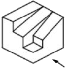
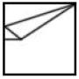
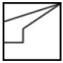
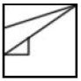
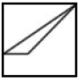
(정답률: 74%)
53. 정면, 평면, 측면을 하나의 투상도에서 동시에 볼 수 있도록 3개의 모서리가 각각 120°를 이루게 그리는 도법은?
- 경사 투상도
- 등각 투상도
- 유각 투상도
- 평행 투상도
(정답률: 78%)
54. 음수대와 관련된 설계 및 설치 설명으로 틀린 것은?
- 사람이 많이 다니는 동선의 중앙에 위치한다.
- 배수구는 청소가 쉬운 구조와 형태로 설계한다.
- 성인 · 어린이 · 장애인 등 이용자의 신체특성을 고려하여 적정높이로 설계한다.
- 지수전과 제수밸브 등 필요시설을 적정 위치에 제 기능을 충족시키도록 설계한다.
(정답률: 77%)
55. T자를 사용한 선긋기의 요령으로 틀린 것은?
- 수평선을 그을 때는 T자를 제도판에 밀착시키고 왼쪽에서 오른쪽으로 긋는다.
- 수직선을 그을 때는 T자와 삼각자를 겸용하여 위에서 아래로 긋는다.
- T자가 움직이지 않도록 왼손으로 머리 부분을 가볍게 누르고, 안으로 밀면서 사용한다.
- 연필심이 고르게 묻도록 T자에 연필을 대고, 적절히 돌리면서 선을 긋는다.
(정답률: 70%)
56. 표제란에 대한 설명으로 옳은 것은?
- 도면명은 표제란에 기입하지 않는다.
- 도면 제작에 필요한 지침을 기록한다.
- 범례는 표제란 안에 반드시 기입해야 한다.
- 도면번호, 작성자명, 작성일자 등에 관한 사항을 기입한다.
(정답률: 65%)
57. 1:50,000 지형도에서 5% 구배의 노선을 선정하려면 등고선 사이에 취하여야 할 도상 거리는? (단, 등고선 간격은 20m 임)
- 4mm
- 8mm
- 10mm
- 12mm
(정답률: 43%)
58. 한국산업표준(KS)에서 규정한 유채색의 기본색 이름의 상호관계를 나타낸다. 빈칸에 들어갈 색명 약호가 순서대로 바르게 짝지어진 것은?(단, 영문은 색명의 약호이다.)
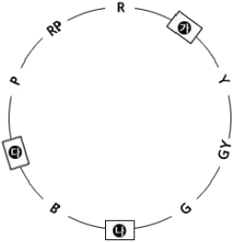
- 가 : Pk, 나 : BG, 다 : Br
- 가 : YR,나 : Rr, 다 : PB
- 가 : Pk, 나 : BG, 다 : PB
- 가 : YR,나 : BG, 다 : PB
(정답률: 75%)
59. 다음은 건축도면에 사용하는 치수의 단위에 관한 설명이다. ( )안에 공통으로 들어갈 단위는?
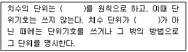
- cm
- mm
- m
- Nm
(정답률: 76%)
60. 조경설계기준상의 경관조경시설과 관련된 설명이 맞는 것은?
- 보행등은 보행로 경계에서 100㎝ 정도의 거리에 배치한다.
- 정원등의 등주 높이는 1.5m 이하로 설계·선정 한다.
- 수목등은 푸른 잎을 돋보이게 할 경우에는 메탈할라이드등을 적용한다.
- 잔디등의 높이는 2.0m 이하로 설계한다.
(정답률: 57%)
4과목: 조경식재
61. 노거수의 공동(空胴) 치료방법에 대한 설명으로 틀린 것은?
- 공동이 큰 경우 버팀대를 박고, 충전재를 채워 넣는다.
- 부패한 목질부를 끌이나 칼 등을 이용하여 먼저 깨끗이 깎아 낸다.
- 공동의 충전재로는 콘크리트, 폴리우레탄, 펄라이트 등이 사용된다.
- 공사를 끝낸 후에 목질부의 부패를 방지하기 위하여 접착용 수지 등으로 이들 사이에 틈이 생기지 않도록 처리해 준다.
(정답률: 71%)
62. 자연풍경식 식재의 기본양식에 해당되는 것은?
- 교호식재
- 대식
- 단식
- 임의식재
(정답률: 72%)
63. 수목의 음 · 양수 구별을 위한 외형상의 현저한 특징 중 가장 거리가 먼 것은?
- 지서(枝序)의 양
- 초두(梢頭)의 위치
- 주간(主幹)의 분화
- 생육지(生育地)의 환경
(정답률: 43%)
64. 식재계획 시 향토자생 수종을 이용하는데 있어서 장점이 될 수 없는 것은?
- 주변지형 및 식생경관과 잘 조화된다.
- 대량구입이 용이하다.
- 지역 환경에 적응이 잘 된다.
- 유지관리에 비용이 적게 든다.
(정답률: 71%)
65. 일년생 가지에서 꽃눈이 생겨 그 해에 꽃이 피는 수목은?
- Lagerstroemia indica
- Prunus yedoensis
- Cercis chinensis
- Camellia japonica
(정답률: 37%)
66. 식재기능을 공간구성과 환경조정에 관한 기능으로 구분할 때, 환경조정과 밀접한 관련이 있는 식재는?
- 경계식재
- 차폐식재
- 방음식재
- 유도식재
(정답률: 59%)
67. 야생동물을 위한 이동통로 중 육교형 통로에 해당하는 설명이 아닌 것은?
- 주로 중 · 대형동물(곰, 멧돼지, 오소리, 너구리, 고라니, 노루 등)용 이다.
- 통로 길이가 긴 경우 중간에 고목, 돌더미 등 피난용 구조물을 추가한다.
- 이용 동물들이 불안감을 느끼지 않도록 입·출구 및 통로 전체는 주변 식생과 조화를 이루도록 조성한다.
- 동물들이 도로를 횡단하지 않고 통로를 이용하도록 유도하기 위해 입·출구의 좌·우측을 따라 방책을 설치하지 않는다.
(정답률: 73%)
68. 다음 ( )안에 적합한 용어는?
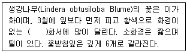
- 산형
- 산방
- 원추
- 총상
(정답률: 37%)
69. 다음 중 『박태기나무』의 학명은?
- Cercis chinensis
- Chamaecyparis obtusa
- Cercidiphyllum japonicum
- Euonymus fortunei var. radicans
(정답률: 63%)
70. 다음 중 천근성 수종으로 옳은 것은?
- 느티나무
- 아까시나무
- 곰솔
- 팽나무
(정답률: 57%)
71. 식재설계의 물리적 요소 중 질감에 관한 설명으로 옳은 것은?
- 잎이 작고 치밀한 수종은 고운 질감을 가진다.
- 좁은 공간에서는 거친 질감의 수목을 식재한다.
- 식재는 사람 시각을 가장 고운 곳에서 가장 거친 곳으로 자연스럽게 이동되도록 해야 한다.
- 고운 질감에서 거친 질감으로 연속되는 식재구성은 멀리 떨어진 듯한 후퇴의 효과를 준다.
(정답률: 59%)
72. 다음 설명에 적합한 수종은?
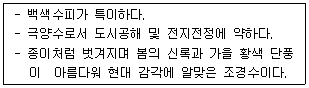
- Carpinus laxiflora
- Betula schmidtii
- Corylus heterophylla
- Betula platyphylla var. japonica
(정답률: 60%)
73. 사실적(寫實的) 식재와 가장 관련이 없는 것은?
- 다수의 수목을 규칙적으로 배식
- 실제로 존재하는 자연경관을 묘사
- 고산식물을 주종으로 하는 암석원(rock garden)
- 월리엄 로빈슨이 제창한 야생원(wild garden)
(정답률: 72%)
74. 중앙분리대 식재 시 차광효과가 가장 큰 수종으로만 나열된 것은?
- 아왜나무, 돈나무
- 광나무, 소사나무
- 사철나무, 쉬땅나무
- 생강나무, 병아리꽃나무
(정답률: 49%)
75. 다음과 같은 특징을 갖는 수종은?
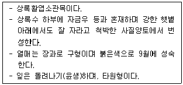
- 맥문동
- 히야신스
- 만년청
- 산호수
(정답률: 47%)
76. 경관생태학의 관점에서 볼 때 개체군과 관련하여 생물종의 손실이 가장 많이 일어나는 곳은?
- 고립되고 면적이 작은 공원 패취
- 산림과 산림을 연결하는 식생 코리더
- 농경지로 이루어진 모자이크
- 도시지역에 넓은 면적을 가진 습지
(정답률: 66%)
77. Raunkiaer의 생활형과 그 대표종이 바르게 연결된 것은?
- 일년생식물 - 수련
- 수생식물 - 돼지풀
- 지중식물 - 얼레지
- 지상식물 - 갈대
(정답률: 50%)
78. 엽(葉)의 속생 수가 옳은 수종은?
- Pinus densiflora : 3개
- Pinus parviflora : 3개
- Pinus bungeana : 5개
- Pinus thunbergii : 2개
(정답률: 56%)
79. 낙상홍의 수목규격 표시 방법은?
- H×R
- H×W
- H×B
- H×L
(정답률: 62%)
80. 수목식재로 얻을 수 있는 기능은 건축적, 공학적, 기상학적, 미적기능이 있다. 다음 중 공학적 기능이 아닌 것은?
- 토양침식의 조절
- 대기정화 작용
- 통행의 조절
- 온도조절 작용
(정답률: 39%)
5과목: 조경시공구조학
81. 조경 수목의 측정은 수목의 형상별로 구분하여 측정하는데 규격의 허용치는 수종별로 설계규격의 몇 % 이내로 하여야 하는가?
- -5 ~ 0%
- -10 ~ -5%
- -15 ~ -10%
- -20 ~ -15%
(정답률: 66%)
82. B.M의 표고가 98.760m일 때, C점의 지반고는? (단, 단위는 m 이고, 지형은 참고사항임)
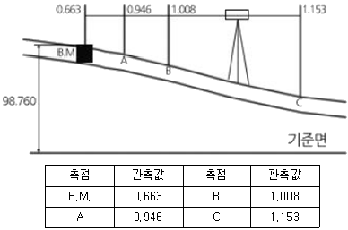
- 98.270m
- 98.415m
- 98.477m
- 99.768m
(정답률: 44%)
83. 다음 네트워크 공정표에서 크리티컬패스(CP, critical path)의 순서로 옳은 것은?
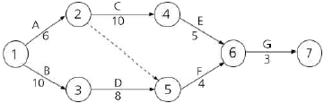
- 1→2→4→6→7
- 1→3→5→6→7
- 1→2→5→6→7
- 1→3→4→6→7
(정답률: 66%)
84. 조경시설물의 제품화에 대한 설명으로 틀린 것은?
- 조경시설물의 제품화율이 점차적으로 높아지고 있다.
- 제품화를 통하여 조경시설의 품질향상효과를 얻을 수 있다.
- 공장에서 생산된 제품을 사용함으로써 현장에서 시공기간을 단축할 수 있다.
- 실시설계단계에서 설계도면에 제품생산회사 및 모델명을 명시해야 한다.
(정답률: 63%)
85. 다음 중 식생옹벽 시공에 관한 설명으로 틀린 것은?
- 옹벽구체 보강토는 배수에 유리한 화강풍화토(마사토) 성분의 사질양토 사용을 원칙으로 한다.
- 식생옹벽의 기울기는 설계도면에 따르되 옹벽용 블록은 선형과 수평이 일정하게 유지되도록 한다.
- 기초는 옹벽 높이의 1/3만큼 터파기하고, 일반 구조용 옹벽에 비해 부등침하에 대한 사전 검토는 생략해도 좋다.
- 식생옹벽에 사용되는 조립식 불록은 모양과 색상이 균일하고 비틀림이나 균열 등이 없는 양질의 제품을 사용하여야 한다.
(정답률: 71%)
86. 견치돌 사이에 모르타르를 채우고, 뒷채움으로 고임돌과 콘크리트를 사용하는 석축공법은?
- 골쌓기
- 메쌓기
- 찰쌓기
- 층지어쌓기
(정답률: 59%)
87. 강우강도곡선과 강우량에 관한 설명 중 옳은 것은?
- 강구강도는 mm/hr 로 표시된다.
- 강우강도는 강우계속시간이 증가하면 증가된다.
- 강우강도 곡선은 일반적으로 1차식으로 표시된다.
- 강우량 곡선에서는 강우계속시간이 증가하면 강우량이 감소한다.
(정답률: 60%)
88. 다음 중 측량의 3대 요소가 아닌 것은?
- 각측량
- 고저측량
- 거리측량
- 세부측량
(정답률: 62%)
89. 다음 중 현행 시방서의 종류가 아닌 것은?
- 표준시방서
- 전문시방서
- 공사시방서
- 기준시방서
(정답률: 61%)
90. 살수기의 선정과 관련된 설명으로 적합하지 않은 것은?
- 동일한 구역 내의 살수기의 살수강도는 같아야 한다.
- 같은 구역에나 구간에서 분무식과 회전식 살수기를 혼용 사용해 효율을 증가시킨다.
- 동일한 회로 내에 살수기에 작동하는 압력은 제조업자가 권장하는 계통의 효과적인 작동압력의 범위 내에 있어야 한다.
- 토양종류, 지표면 경사, 식물종류, 지표면의 형태와 규모, 장애물의 유무를 고려하여 적합한 살수기를 선정한다.
(정답률: 68%)
91. 조경공사에 필요한 공사비 산정에 대한 설명으로 적합하지 않은 것은?
- 경비는 직접경비와 기타경비로 구분되며, 기타경비는 직접경비에 기타경비율을 곱하여 적용한다.
- 노무비는 직접노무비와 간접노무비로 구성되며, 간접노무비는 직접노무비에 간접노무비율을 곱하여 적용한다.
- 일반관리비는 기업의 유지, 관리 비용 등 본사경비의 개념으로서 순공사비에 일반관리비율을 곱하여 적용한다.
- 재료비는 순공사비를 구성하는 직접재료비, 간접재료비와 부대비용에서 작업부산물의 가치를 공제한 것이다.
(정답률: 36%)
92. 비가 오후 1시 15분에서 45분까지 30㎜가 왔다면 그 당시의 평균강우강도(㎜/hr)는 얼마인가?
- 15
- 30
- 45
- 60
(정답률: 59%)
93. 하도급업체의 보호육성차원에서 입찰자에게 하도급자의 계약서를 입찰서에 첨부하도록 하여 덤핑입찰을 방지하고 하도급의 계열화를 유도하는 입찰방식은?
- 부대입찰
- 내역입찰
- 제한경쟁입찰
- 제한적 평균가낙찰제
(정답률: 44%)
94. 석재의 성질에 대한 설명으로 틀린 것은?
- 압축강도는 중량이 클수록, 공극률이 작을수록 크다.
- 일반적으로 내구연한은 대리석이 화강석보다 크다.
- 흡수율이 크다는 것은 다공성이라는 것을 나타내며, 대체로 동해나 풍화를 받기 쉽다.
- 일반적으로 암석의 밀도는 겉보기 밀도를 말하며, 조직이 치밀한 암석은 2.0~3.0 범위이다.
(정답률: 59%)
95. 강우유출량을 계산하는 공식인
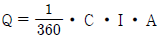
에서 I 가 의미하는 것은?- 강우속도
- 우수유출계수
- 배수면적
- 강우강도
(정답률: 53%)
96. 공원지역에서 강우시 배수를 위한 수리효과(水理效果)에 직접적인 영향을 미치지 않는 것은?
- 수로의 경사
- 적설량(積雪量)
- 동수반경(動水半經)
- 개수로 단면의 조도계수(組度係數)
(정답률: 60%)
97. 다음 옥외조명에 관한 사항으로 옳은 것은?
- 광도(光度)는 단위 면에 수직으로 떨어지는 광속밀도로서 단위는 룩스(lx)를 쓴다.
- 수은등은 고압나트륨등에 비해 2배 이상의 효율을 가지고 있다.
- 도로 조명은 휘도 차에서 오는 눈부심을 줄이기 위해 광원을 멀리한다.
- 교차로 조명등의 설치간격은 10m 정도가 좋고, 아래의 여러 방향으로 방사하도록 한다.
(정답률: 47%)
98. 그림과 같은 단순보에서 지점 A의 수직반력값은?
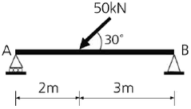
- 10kN
- 15kN
- 20kN
- 25kN
(정답률: 42%)
99. 안료+아교, 카세인, 전분+물의 성분으로 내수성이 없고 내알칼리성이며 광택이 없고 모르타르와 회반죽 면에 쓰이는 페인트는?
- 유성페인트
- 에나멜페인트
- 수성페인트
- 에멀션페인트
(정답률: 48%)
100. 다음 중 시공계획의 순서가 옳은 것은?
- 사전조사 → 일정계획 → 기본계획 → 가설 및 조달계획 → 관리계획
- 사전조사 → 기본계획 → 일정계획 → 가설 및 조달계획 → 관리계획
- 사전조사 → 기본계획 → 가설 및 조달계획 → 일정계획 → 관리계획
- 사전조사 → 일정계획 → 가설 및 조달계획 → 기본계획 → 관리계획
(정답률: 54%)
6과목: 조경관리론
101. 공정관리상 최적공기란 직접비와 간접비를 합한 총공사비가 최소가 되는 가장 경계적인 공기를 말한다. 시공속도를 빠르게 하면 공기 단축에 따른 일반적인 직 · 간접비의 증감 사항으로 맞는 것은?
- 직접비 : 증가, 간접비 : 증가
- 직접비 : 증가, 간접비 : 감소
- 직접비 : 감소, 간접비 : 증가
- 직접비 : 감소, 간접비 : 감소
(정답률: 59%)
102. 과일이 열리는 조경수목에서 도장지는 힘이 강한 가지의 기부에 급속도로 자란 필요치 않는 나무 가지로서 생장기에는 우선 길이를 반 정도 줄여 힘을 억제하고 이듬해 봄에 동기(冬期) 전정 때는 어느 정도 잘라야 하는가?
- 가지의 1/2을 남기고 자른다.
- 가지의 2/3정도를 남기고 자른다.
- 줄기에 바짝 붙여서 기부로부터 자른다.
- 기부로부터 2~3눈을 남기고 자른다.
(정답률: 56%)
103. 다음 중 수목의 육종에서 콜히친(colchicine) 처리에 따른 효과를 가장 잘 설명한 것은?
- 식물체를 빨리 자라게 한다.
- 병에 대한 저항성을 높여준다.
- 염색체 수를 다배수로 만든다.
- 천연적으로 교배할 수 없는 수종간의 교배가 가능하게 한다.
(정답률: 49%)
104. 다음 [보기]에서 나타난 예는 레크리에이션공간의 관리에 있어서의 5가지 기본 전략 중 어느 것에 해당되는가?
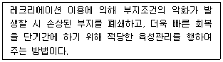
- 폐쇄 후 육성관리
- 폐쇄 후 자연회복형
- 완전방임형 관리전략
- 순환식 개방에 의한 휴식기간 확보
(정답률: 71%)
1⑤. 카바메이트(carbamate)계 농약에 해당하지 않는 것은?
- 페노뷰카브유제
- 카보설판수화제
- 페니트로티온수화제
- 티오파네이트메틸수화제
(정답률: 36%)
106. 자연공원에서 동 · 식물 서식지 확대를 위한 모니터링(Monitoring)의 효과적 방법이라 하기 어려운 것은?
- 최소비용의 도모
- 측정지표의 정성화
- 위치 선정의 타당성
- 신뢰성 있는 기법의 도입
(정답률: 44%)
107. 습윤한 토양의 무게는 1650g, 그리고 건조 후 토양의 무게가 1450g, 용기의 부피는 1000cm3 일 때 이 토양의 용적밀도(g/cm3)는?
- 1.00
- 1.25
- 1.45
- 1.65
(정답률: 50%)
108. 횡선식 공정표(bar chart)의 특징이 아닌 것은?
- 작성하기 쉽다.
- 작업 상호관계가 분명하다.
- 각 공종별 공사와 전체의 공정시기 등이 일목요연하다.
- 공사 진척 사항을 기입하고 예정과 실시를 비교하면서 관리할 수 있다.
(정답률: 60%)
109. 비탈면 보호시설 공법의 설명으로 옳은 것은?
- 종자뿜어붙이기공은 일종의 식생공이다.
- 비탈면 돌망태공은 용수(湧水) 및 토사유실 우려가 없는 곳에 시행된다.
- 콘크리트 격자 블록공은 식생공법을 배제한 구조물에 의한 비탈면 보호공이다.
- 평판 블록 붙임공은 비탈면 길이가 길고 경사(傾斜)가 비교적 급한 곳에 시행된다.
(정답률: 62%)
110. 실외 테니스, 배드민턴의 공식경기에 필요한 수평면 평균 조도 값(lx)은?
- 5000
- 2000
- 1000
- 500
(정답률: 53%)
111. 건설공사에 있어서 안전을 확보하기 위한 예방 대책과 가장 거리가 먼 것은?
- 현장의 정리정돈
- 안전관리기구의 구성
- 산업재해보험의 가입
- 안전교육의 주기적 실시
(정답률: 70%)
112. 토양 중 인산이 난용성으로 되는 가장 큰 이유는?
- 휘산(揮散)
- 산화(酸化)
- 고정(固定)
- 용탈(溶脫)
(정답률: 35%)
113. 배수시설의 구조 중 지하배수시설의 구조물이 아닌 것은?
- 맹암거
- 측구
- 유공관암거
- 배수관거
(정답률: 64%)
114. 조경공간에서 관리하자에 의한 안전사고로 옳은 것은?
- 유리조각을 방치하여 발을 베인 사고
- 관객이 백네트에 올라갔다가 떨어진 사고
- 그네에서 뛰어내리는 곳에 벤치가 설치되어 있어 충돌한 사고
- 시설물의 구조상 접속부에 손이 끼거나 구조 자체의 결함에 의한 사고
(정답률: 67%)
115. 다음과 같은 네트워크 공정관리에서 각 작업의 여유 시간이 틀린 것은?
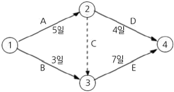
- A작업의 여유시간은 없다.
- B작업의 여유시간은 3일이다.
- D작업의 여유시간은 3일이다.
- E작업의 여유시간은 없다.
(정답률: 60%)
116. 수목 이식 직후 조치하여야 할 주 관리사항으로 가장 부적절한 작업은?
- 수간보호
- 지주목 설치
- 관수 및 전정
- 뿌리돌림
(정답률: 67%)
117. 다음 중 이액순위(lyotropic series)가 가장 큰 원소는?
- Na
- K
- Mg
- Ca
(정답률: 38%)
118. 일반적인 조경수 재배 토양과 비교했을 때 염해지 토양의 가장 뚜렷한 특징은?
- 유기물 함량이 높다.
- 활성 철 함량이 높다.
- 치환성 석회 함량이 높다.
- 마그네슘, 나트륨 함량이 높다.
(정답률: 65%)
119. 솔수염하늘소에 대한 설명으로 옳지 않은 것은?
- 유충으로 월동한다.
- 소나무재선충병의 매개체이다.
- 산란기는 6 ~ 9월이며, 7 ~ 8월에 가장 많다.
- 암컷 한 마리의 산란수는 평균 500여개 정도이다.
(정답률: 50%)
120. 정지, 전정의 방법으로 틀린 것은?
- 무성하게 자란 가지는 제거한다.
- 수목의 주지(主枝)는 하나로 자라게 한다.
- 역지(逆枝), 수하지(垂下枝) 및 난지(亂枝)는 제거한다.
- 같은 방향과 각도로 자라난 평행지는 제거하지 않고 남겨둔다.
(정답률: 70%)